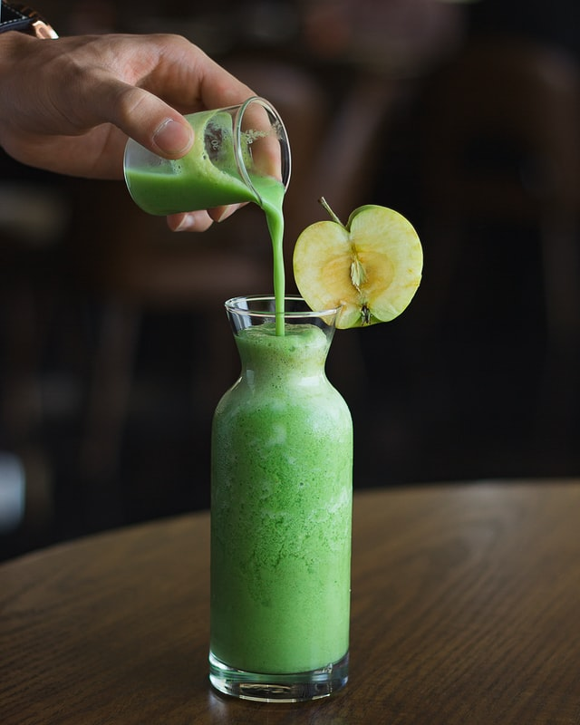

과거에는 HTML에 디자인적 요소를 포함하여 작성하는 것이 일반적이었다. 다시 말해서 온갖 레이아웃, 디자인 정보를 HTML 안에 욱여넣다 보니 HTML의 본연의 목적인 구조화된 문서가 아닌 디자인을 위한 문서로 전락하고 말았다. 표를 작성해야 하는 태그가 레이아웃을 구성하는 용도로 쓰이는 등으로 인해 HTML 소스코드만 보면 이 문서가 어떤 문서인지 전문가조차 알기 힘든 상황이었다
<sssssssssssssssssssssssssssssss sssssssssssssssssssssssssssssss sssssssssssssssssssssssssssssss
중국 헝다그룹 위기감 커지자 리스크 확대증시 외국인 투자자 순매도 전환, 지수 하락[이데일리 이윤화 기자] 원·달러 환율이 2원 가량 올라 사흘 만에 1170원대를 회복했다. 나흘 만의 상승 전환이다. 이는 국내증시에서 외국인이 순매도로 전환하면서 코스피, 코스닥 지수를 끌어 내린데다 위안화가 약세로 전환하는 등의 영향이 컸다.
